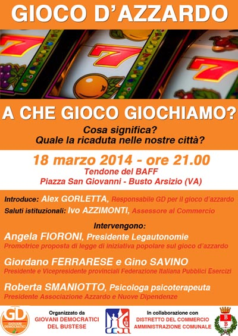
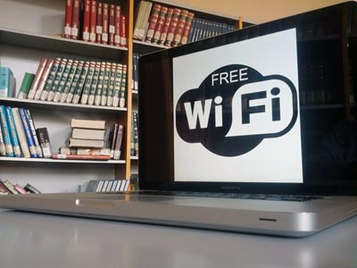
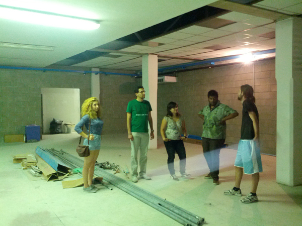
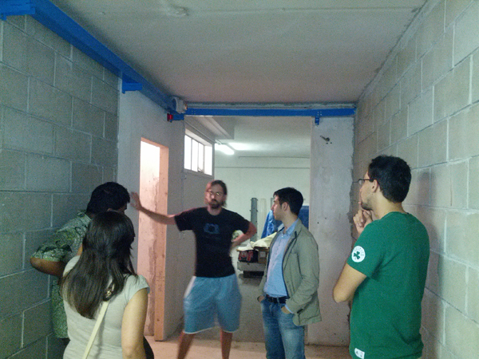

Progetti e proposte
"Per questo il governo del santo
svuota il cuore al popolo e ne riempie il ventre,
ne infiacchisce il volere e ne rafforza le ossa
sempre fa sì che non abbia scienza né brama
e che colui che sa non osi agire.
Poiché egli pratica il non agire
nulla v'è che non sia governato." (Lao Tzu - Tao te ching)
Che vuol dire proporre?
I GD del Bustese riconoscono e rispettano il pluralismo delle opzioni culturali e delle posizioni politiche al loro interno come parte essenziale della vita democratica dell’organizzazione e riconoscono pari dignità a tutte le condizioni personali, quali il genere, l’età, le convinzioni religiose, le disabilità, l’orientamento sessuale, l’origine etnica. I GD del Bustese promuovono la circolazione delle idee e delle opinioni, l’elaborazione collettiva degli indirizzi politico programmatici, la formazione di sintesi condivise, la crescita di competenze e capacità di direzione politica, anche attraverso momenti di studio e di formazione.
Ludopatia una piaga che non possiamo ignorare
Teniamo l'occhio vigile e informiamoci sui rischi che corriamo.
Giovani Democratici del Bustese: "Gioco d'azzardo: a che gioco giochiamo?"
Comunicato stampa, 13 marzo 2014
 Martedì 18 marzo 2014 una serata pubblica per parlarne con psicologi e commercianti“Gioco d’azzardo: a che gioco giochiamo?”. Questo il titolo dell’iniziativa organizzata dai Giovani Democratici del Bustese in collaborazione con l‘Amministrazione comunale ed il Distretto del Commercio di Busto Arsizio ed in programma per martedì 18 marzo alle ore 21.00 in piazza San Giovanni presso il tendone riscaldato del BAFF.
“Ci siamo incontrati più volte tra di noi per discutere delle tematiche legate al gioco d’azzardo – afferma il Segretario dei GD Massimo Brugnone - e ci siamo accorti come anche al nostro interno ci siano opinioni differenti. Per questo abbiamo voluto organizzare un momento di confronto: per capire i diversi aspetti, sanitari ed economici, che ruotano intorno a questo tema”.
Ad introdurre la serata ci saranno Alex Gorletta, Responsabile per i Giovani dem del gruppo di lavoro sul gioco d’azzardo, e l’Assessore al Commercio Ivo Azzimonti. La parola passerà poi ad Angela Fioroni, Presidente di Legautonomie e promotrice della raccolta firme per la legge di iniziativa popolare sul gioco d’azzardo, a Giordano Ferrarese e Gino Savino, rispettivamente Presidente e Vicepresidente provinciali della Federazione Italiana Pubblici Esercizi, ed a Roberta Smaniotto, Psicologa psicoterapeuta, Presidente dell’Associazione Azzardo e Nuove Dipendenze.
“Il nostro intento - afferma Gorletta - è quello di creare un serio momento di dibattito con tutte le categorie toccate dalla tematica del gioco d’azzardo: dalle strutture sanitarie ai commercianti”.
Infrastrutture digitali
Non lasciamo che Busto Arsizio si accodi all'Italia in questo grave vizio.
Busto Arsizio, Wi-Fi libero in biblioteca
Comunicato stampa, 5 aprile 2014
«È la dimostrazione che quando i cittadini si organizzano e partecipano attivamente ed in modo propositivo alla vita amministrativa della città, i risultati concreti si possono ottenere». Questo il commento di Massimo Brugnone, Segretario dei Giovani democratici del Bustese che lo scorso giugno avevano organizzato una raccolta firme per chiedere l’eliminazione dei blocchi all’accesso internet della rete Wi-Fi in biblioteca.
«Oggi finalmente si può accedere alle email di ateneo, personali e fare ricerche senza che ogni due per tre tutto si blocchi. Raccogliere le richieste degli studenti e degli utenti del servizio pubblico in generale – aggiunge Brugnone – non può che essere il modo migliore per la politica per render più efficaci ed efficienti gli spazi in cui viviamo».
«È solo il primo passo – commenta Emanuele Mason, responsabile comunicazione dei Giovani Dem – il prossimo dovrà essere l’espansione della rete internet Wi-Fi in tutti gli spazi aggregativi della città, a partire dai parchi e dalle piazze».
Non si fermano i Giovani del Pd che, anche dopo la recente iniziativa pubblica sul gioco d’azzardo, si candidano sempre più ad essere motore propulsivo della vita politica cittadina e non.
Associazioni che abbiamo incontrato
Il mondo associativo è il nostro legame privilegiato con la società.
Associazione autonoma, indipendente che si occupa di attività socioculturali
 L’associazione è a carattere socio culturale ed è composta da diversi volontari attivi con un Consiglio Direttivo di nove membri. Il nome 26x1 deriva da un vecchio motto partigiano: il Comitato di Liberazione Nazionale lo ha usato il 25 Aprile 1945 per comunicare in codice l’ordine di insurrezione totale nella cittadina di Busto Arsizio attraverso Radio Busto, una radio che aveva sede nel quartiere di Sant'Edoardo.
Qual è la vostra storia?
26x1 è nata nel 2008, da un gruppo di giovani e di amici con una serie di esperienze associative precedenti. Fin da subito ha cercato di dar vita ad eventi culturali e di proporsi come ente aggregativo e circolo culturale per chiunque avesse voluto farne parte. Dopo i primi anni di attività itinerante, la necessità di uno spazio proprio dove portare avanti le proposte è diventata impellente, così l’associazione ha intrapreso una lunga ricerca di uno spazio pubblico. Da non molto l’associazione è entrata in contatto con un privato che, apprezzando il progetto proposto dai giovani di 26x1, ha deciso di venire incontro alle esigenze dei ragazzi. Da quel momento per l’associazione si è aperta una nuova fase: la nuova scommessa è quella di dar vita ad un circolo culturale con spazio bar, sala concerti per eventi dal vivo, cineforum, dj set e molto altro. Inoltre si pensa di sistemare anche spazi utilizzabili per altre attività ancora tutte da ideare. Se tutto va bene, a partire da ottobre/novembre 2014 l’attività del circolo avrà inizio.
Cosa fate?
L’associazione si occupa di organizzare eventi singoli o cicli di eventi a sfondo socio culturale. Le iniziative variano molto e vanno dall’approfondimento di temi legati all’attualità, all’organizzazione di cene/pranzi, cineforum e molto altro ancora. “Paesaggi sonori” è un’iniziativa musicale che 26x1 porta avanti da ormai sei anni. Si svolge a Cardano al Campo, dove gli spazi rispondono maggiormente alle esigenze degli organizzatori.
In quale zona di Busto agite?
 Ovunque e comunque, anche fuori Busto
Qual è la vostra età media?
28.
A che età vi rivolgete?
A chiunque. Le iniziative sono universali.
Avete una sede vostra?
Inizialmente l’associazione non aveva una sede personale, questo rendeva difficoltosa l’organizzazione di ogni singola attività, per questo poco dopo la fondazione è iniziata la ricerca di uno spazio pubblico che diventasse non solo una sede formale, ma anche uno spazio aggregativo. Da non molto il luogo è stato trovato tramite privato e attualmente è in corso la sistemazione degli spazi.
Vorreste una sede dal comune?
26x1 ha cercato di ottenere uno spazio pubblico, presentando più volte una richiesta alle istituzioni di dovere, ma sempre invano. Avere uno spazio pubblico, quindi, è una possibilità contemplata dai ragazzi dell’associazione, ma la condizione necessaria è che la concessione sia assolutamente priva di ogni censura sui messaggi veicolati e le iniziative proposte.
Vi piacerebbe uno spazio pubblico in comune con altre associazioni?
“Nel mondo perfetto sì”, così risponde Francesco, Presidente dell’associazione. Creare rete è necessario e favorisce i legami tra i diversi enti del territorio, ma farlo in maniera proficua non è banale: serve una progettualità notevole, dove ognuno abbia ben chiari gli obiettivi e gli scopi dell’unione tra associazioni. Avere uno spazio comune non deve essere sinonimo di un contenitore dove si trovano oggetti alla rinfusa.

Siamo un'associazione di promozione sociale e culturale che si prefigge consapevolezza critica e coesione sociale in una città atomizzata.
Com'è nata la vostra associazione?
L'associazione é stata costituita nel 2010. Il Quadrifoglio non è SEL. Siamo un'associazione culturale. Dietro c'è un motivo politico: vogliamo creare una consapevolezza critica. Facciamo un lavoro di supplenza perché nessuno di parla di certe cose: occorre educare i giovani per favorire un ricambio generazionale a livello amministrativo che migliori la situazione attuale. Diamo la nostra sede in utilizzo a SEL, stranieri, comunità bengalese che svolge attività di educazione. Cediamo la sede a privati che ma hanno bisogno ma organizziamo anche nostre iniziative di argomento storico, economico, politico. Organizziamo cene, concerti, presentazioni di libri: tutto ciò che ha a che fare con la cultura. Organizziamo iniziative anche insieme ad altre associazioni contro la violenza sulle donne e contro le mafie. Le ultime iniziative avevano come tema EXPO e la povertà nel Terzo mondo.
La sede è di vostra proprietà?
No, siamo in affitto. Dal 2008 abbiamo iniziato a sentire l'esigenza di una sede nostra. Ci siamo rivolti al comune che inizialmente è sembrata disponibile a concederci una sede in via Espinasse. Probabilmente per motivi politici l'assessore Reguzzoni, una volta compresa la nostra collocazione sul continuum destra-sinistra, ce l'ha negata seppur vuota. Una cooperativa ci propose la sede attuale in via Lodi. A Busto Arsizio ci sono associazioni di serie A e di serie B. Nel valutare le richieste delle associazioni c'è discrezionalità ideologica. L'attuale amministrazione finanzia e aiuta solo chi vuole. C'è inoltre da dire che manca una ratio nella distribuzione di risorse: basti pensare alla vicenda Palaghiaccio.
Vi piacerebbe che il comune vi desse una sede anche condivisa con altre associazioni?
Siamo offesi e feriti da questa amministrazione perché non ci sono gli spazi per i giovani o i bengalesi. Non c'è nulla. Gli spazi pubblici vengono dati con discrezionalità ideologica. Non c'è consapevolezza del fatto che la coesione sociale si forma negli spazi. Mancano spazi e risorse. Sarebbero da distribuire meglio. Gli spazi privati costano troppo e non sono abbordabili. A Busto non esiste uno spazio pubblico aperto coperto. Molte cose a Busto non si fanno perché manca lo spazio. Occorrerebbe uno spazio con prezzi abbordabili senza discriminazioni ideologiche. C'è la necessità di uno spazio per gli stranieri per imparare le lingue e di alternative all'oratorio feriale per stranieri e atei. Probabilmente l'attuale amministrazione non la sente come una necessità. In un paese democratico l'amministrazione comunale deve fornire aiuto alle associazioni in maniera neutrale senza preferenze. Non si stratta di un'amministrazione che non abbia risorse. Ma sono distribuite male.
Qual è la vostra età media? A che età vi rivolgete?
52 anni. Ci rivolgiamo a tutte le età. A chi interessa.
Vorreste una sede dal comune?
La vogliamo per chi non ce l'ha e ne ha bisogno.
Reputate utile questo lavoro?
Siete giovani: se non voi, chi?